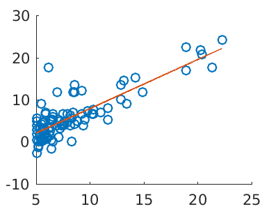

In [1]:
fprintf('load data')
load data
In [2]:
data = load('ex1data1.txt');
In [3]:
length(data)
ans =
97
In [4]:
n = 97;
X = data(1:n, 1);
y = data(1:n, 2);
m = length(y);
X = [ones(m, 1), X(:,1)];
In [5]:
theta = [0, 0]'
theta =
0
0
In [6]:
computeCost(X, y, theta)
ans =
32.0727
In [7]:
%plot -s 400,300
scatter(X(:,2), y)
hold on
plot(X(:,2), X*theta, '-')

[Warning: MATLAB has disabled some advanced graphics rendering features by
switching to software OpenGL. For more information, click <a
href="matlab:opengl('problems')">here</a>.]
代价函数
梯度下降
In [8]:
iterations = 1500;
alpha = 0.01;
In [9]:
theta = [0, 0]'
theta =
0
0
晚上理解下 matlab 的 for 循环和梯度下降
In [10]:
J_history = zeros(iterations, 1);
for iter = 1:iterations
J_history(iter) = computeCost(X, y, theta);
pred = X * theta;
updates = X' * (pred - y);
theta = theta - alpha * (1/m) * updates;
end
In [11]:
size(J_history)
ans =
1500 1
In [12]:
theta
theta =
-3.6303
1.1664
In [13]:
%plot -s 400,300
scatter(X(:,2), y)
hold on
plot(X(:,2), X*theta, '-')

梯度下降算法推导¶
In [19]:
size(X')
ans =
2 97
matlab 取子集不支持一边无数
In [29]:
x = X(1:5,:)
x =
1.0000 6.1101
1.0000 5.5277
1.0000 8.5186
1.0000 7.0032
1.0000 5.8598
In [30]:
y = data(1:5,2)
y =
17.5920
9.1302
13.6620
11.8540
6.8233
In [31]:
m = length(y)
m =
5
In [34]:
theta = [1, 0]'
theta =
1
0
In [35]:
computeCost(x, y, theta)
ans =
65.3441
In [ ]:
J_history = zeros(iterations, 1);
for iter = 1:iterations
pred = X * theta;
updates = X' * (pred - y);
theta = theta - alpha * (1/m) * updates;
J_history(iter) = computeCost(X, y, theta);
end
向量化推导¶
In [49]:
theta = [3.4;5.4]
theta =
3.4000
5.4000
In [45]:
b = x(1,:)'
b =
1.0000
6.1101
\(\theta_{0}x_{0} + \theta_{1}x_{1}\)
In [50]:
theta(1,:)*b(1,:) + theta(2,:)*b(2,:)
ans =
36.3945
In [51]:
theta'*b
ans =
36.3945
In [54]:
x
x =
1.0000 6.1101
1.0000 5.5277
1.0000 8.5186
1.0000 7.0032
1.0000 5.8598
In [57]:
y
y =
17.5920
9.1302
13.6620
11.8540
6.8233
In [55]:
theta
theta =
3.4000
5.4000
In [56]:
x*theta
ans =
36.3945
33.2496
49.4004
41.2173
35.0429
In [76]:
error = (x*theta - y)
error =
18.8025
24.1194
35.7384
29.3633
28.2196
In [82]:
p(1,:)*x(1,:)
ans =
18.8025 114.8854
In [78]:
x
x =
1.0000 6.1101
1.0000 5.5277
1.0000 8.5186
1.0000 7.0032
1.0000 5.8598
In [81]:
x'
ans =
1.0000 1.0000 1.0000 1.0000 1.0000
6.1101 5.5277 8.5186 7.0032 5.8598
In [79]:
p
p =
18.8025
24.1194
35.7384
29.3633
28.2196
In [80]:
x'*p
ans =
136.2433
923.6498
In [84]:
p
p =
18.8025
24.1194
35.7384
29.3633
28.2196
In [87]:
x'
ans =
1.0000 1.0000 1.0000 1.0000 1.0000
6.1101 5.5277 8.5186 7.0032 5.8598
In [ ]: